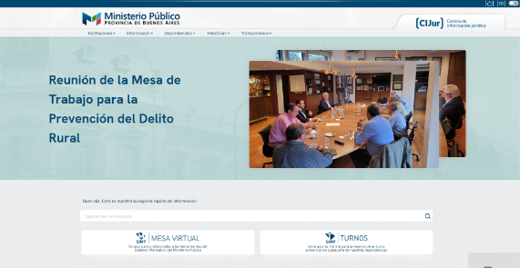
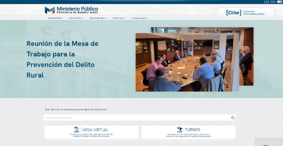

“Ser “científico” no implica negarse a la intuición como punto de partida; lo esencial es la forma que le daremos a la intuición inicial, el “trabajo” al que la someteremos, de tal modo que a partir de un cierto momento ella no será más necesaria”.
- Noam Chomsky
 
